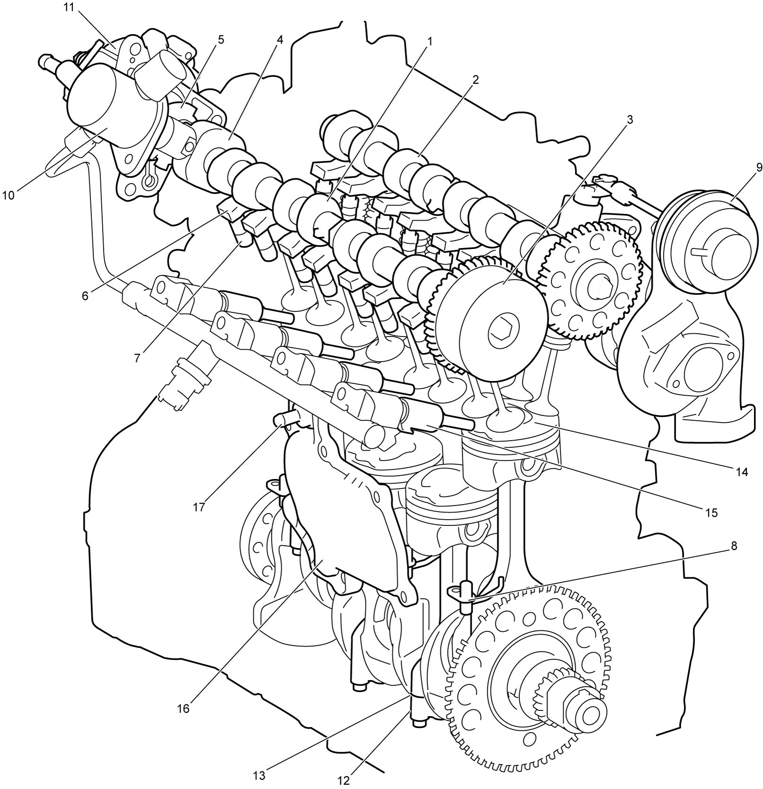

1D
| Engine Construction Description |
The engine is a water-cooled, in-line 4-cylinder, 4-stroke-cycle direct-injection gasoline unit with a DOHC valve mechanism arranged in a “V” type valve configuration and has 16 valves.
Intake camshaft (1) and exhaust camshaft (2) are mounted over the cylinder head and are driven by the crankshaft with a timing chain. The intake camshaft is equipped with a VVT actuator (3), a high pressure fuel pump cam (4) and a signal rotor (5).
The valves are operated by roller type rocker arms (6) driven by intake and exhaust camshafts. And, end of the valve rocker arms are supported by hydraulic valve lash adjusters (7) which require no valve clearance adjustment.
Exhaust manifold is incorporated in the cylinder head and cooled by coolant.
The engine is equipped with piston cooling jets (8), oil cooler, intercooler and turbocharger (9), and the turbocharger is mounted on the cylinder head directly at the end of the built-in exhaust manifold. Further, a high pressure fuel pump (10) and a vacuum pump (11) are mounted on the cylinder head at the rear side and driven by the intake camshaft.
This engine has adopted cracked connecting rods (12). The connecting rod formed as a single piece is cracked apart at the cracking line (13) and then combined in one using connecting rod bolts without using dowel pins. This method ensures a stable fitting between connecting rod and its cap reducing the weight.
With this direct-injection system, intake air is supercharged into the combustion chamber (14) by the turbocharger and the air is highly compressed in the compression stroke, and before the end of the compression stroke, fuel is injected through fuel injector (15) at very high pressure into the combustion chamber directly and ignited by long reach spark plug. This fuel combustion generates more engine power with low emission compared with normal aspiration engine.
Crankcase ventilation is managed using two routes. A breather plate (16) adjoining the cylinder block provides labyrinth and separates oil and blow-by gas, and the blow-by gas is sucked in intake manifold through PCV valve (17) and the separated oil returns in oil pan. As another ventilation route, a breather hose is provided between the upper part of the cylinder head cover and air cleaner outlet hose.

 "Expand image")